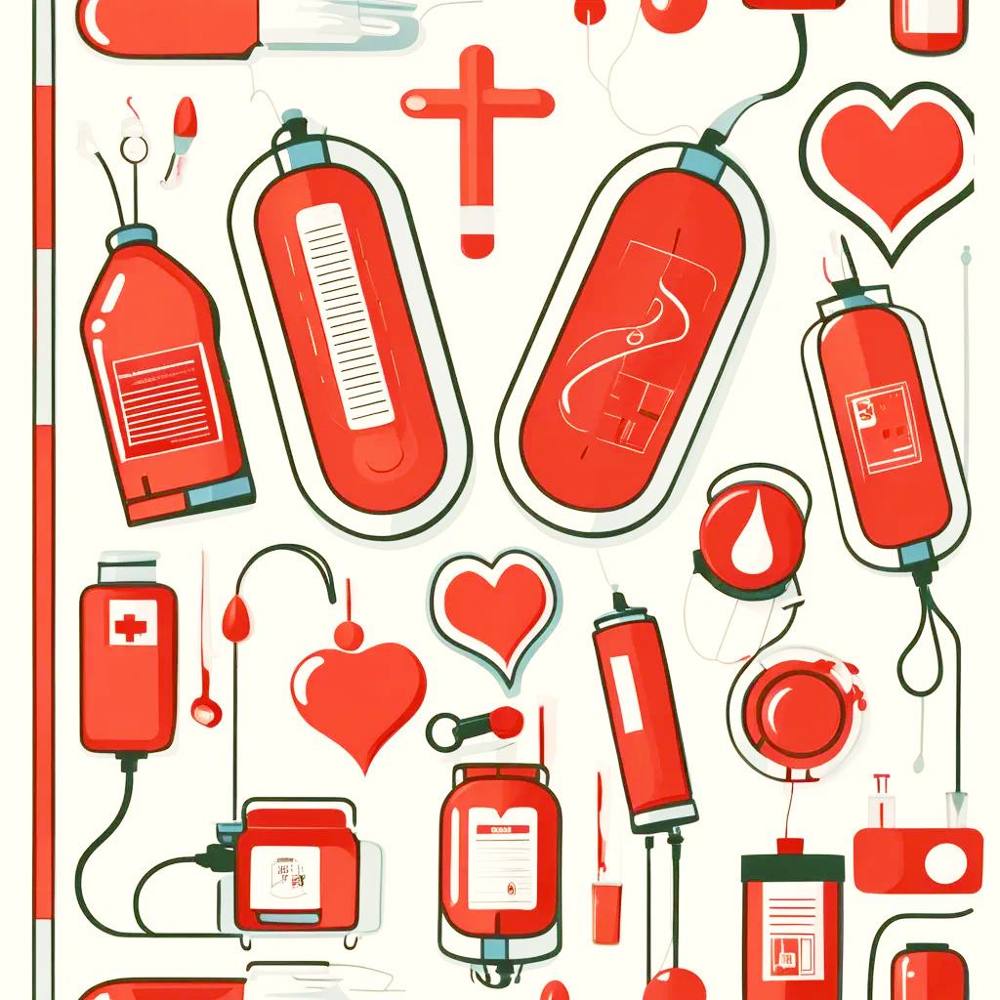
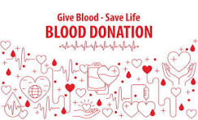
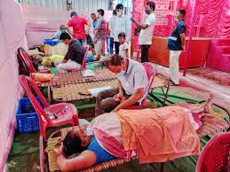

Why Donate?
One donation can save up to three lives. Be a hero today!
Quick Process
The donation process is safe and takes only about 10-15 minutes.

Always Needed
Blood is always needed for surgeries, accidents, and medical treatments.